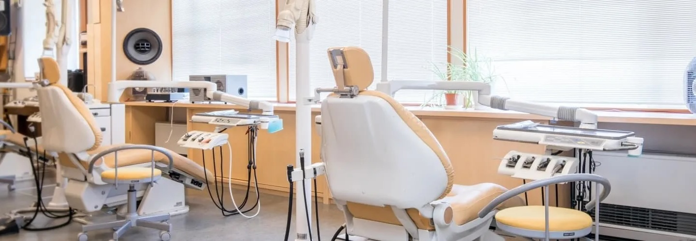

診療内容
一般歯科から専門治療まで幅広く対応
MEDICAL SERVICES
診療内容
一般歯科・小児歯科・矯正歯科それぞれの専門医師が在籍しています。
虫歯・歯周病の治療からインプラント・矯正まで幅広く対応可能です。
虫歯・歯周病治療 / メンテナンス
虫歯は早期発見・早期治療が重要です。定期検診とプロフェッショナルクリーニングで予防に努め、治療が必要な場合は最小限の処置で歯を守ります。 歯周病は歯を失う主な原因の一つです。専門的なスケーリングとホームケア指導で、健康な歯周組織を維持します。

審美治療 / ホワイトニング
セラミッククラウン・ジルコニアクラウン・ラミネートベニアなど、自然な見た目と高い耐久性を兼ね備えた素材をご提案します。 ホワイトニングはオフィスホワイトニング（院内施術）とホームホワイトニング（自宅ケア）の2種類をご用意しています。

インプラント
失った歯を自然な見た目と噛み心地で取り戻すインプラント治療。CTスキャンによる精密な診断と、経験豊富な院長による安全な手術を提供します。 ブリッジや入れ歯と異なり、周囲の歯を削らずに済む点が大きなメリットです。

矯正歯科
マウスピース矯正（インビザライン）から従来のワイヤー矯正まで、患者様のライフスタイルに合わせてご提案します。 大人の矯正はもちろん、お子様の早期矯正にも対応しています。

小児歯科
お子様が歯科治療に対して良いイメージを持てるよう、楽しい雰囲気の中で丁寧に治療を行います。 フッ素塗布・シーラントによる予防処置から、乳歯の治療まで幅広く対応します。

根管治療
歯の根の治療（根管治療）は、抜歯を避けて歯を残すための重要な治療です。 マイクロスコープを使用した精密な処置で、再発リスクを最小限に抑えます。